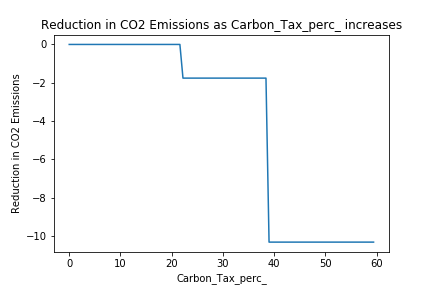

The conditions of the planet have shifted significantly due to the rise in CO2 emissions. There are regions in the world that have taken action towards mitigating the effects of the rise in emissions and those who have not. Our team's goal is to help support the cause by providing assistance in evaluating what is the best course of action to reduce overall carbon emissions.
Climate change is becoming more and more urgent of a problem in the world. To combat that, public policy from many different countries have been employed; however, the efficacy of each policy isn’t clear.
To obtain the data, a multitude of websites were scraped with regard to changes in CO2 emissions as well as policies in each country that could affect climate. For CO2 emissions, a dataset on Kaggle was used and verified by checking to see if it was consistent with other sources. Features were chosen that were hypothesized would have an effect on emissions and created a dataset based on data gathered. Features include the amount of wind power each country produces, the solar power capacity each country has, tax incentives a country has for certain environmental factors, and taxes that countries impose for non-environmentally friendly behavior. A country’s population and GDP per capita were considered because the economics and conditions for each country vary vastly and it would be an oversight not to consider those factors in the model. While researching to find data points for the set, the decision was made to use years that had readily available and complete data for each country. Therefore, the choice was made to investigate the policies from 2014 to 2018, and for some countries years that further preceded 2014 were looked into. More data needs to be accumulated for the dataset so the training dataset will produce a more accurate model than what is presently available.
After collecting data into a CSV, the pandas library was used to convert the CSV into a numpy array which was then stored in a MySQL database using the mysql library for Python. From here, the Python script can convert one of the columns from the MySQL table based on the CSV into its own table to act as the labels. This was done since MySQL databases are incredibly efficient at storing data but also allow the data to be easily manipulated without changing the original CSV information. Thus, columns can be normalized easily even as new data is added. Further, the database allows for any preprocessing to take place permanently. That is, one could perform computationally expensive processes only once and not have to do it again. Currently, none of the data is being normalized nor is any preprocessing occurring; however, it is easy to implement any in the future should processing become desired.
Once the data is finished being input into the database, it is run through a Random Forest Regressor model (RFRM) from SciKit-Learn. Other regression models such as linear, lasso, and ridge were tested; however, random forest was found to give the most accurate results. In addition, the optimal max depth of each decision tree was found to be 11 after cross-validation with five folds was used to find the optimal train test split. Another important note is that the data is sorted by year before being split into slices by the cross-validation function; this is because the accuracy of the RFRM significantly decreases if the data is sorted by country.
The RFRM gives its best results when using the middle slice of data with a max depth of 11 which yields an R^2 score of 0.9994; in addition, this high score is not an outlier. Using the same split of training and testing data, the average R^2 score for depths between 1 and 20 is 0.988. Since RFRM is not a linear model, it is difficult to make definitive statements about the weights of the features; however, the best performing model gives GDP (USD) of countries an importance of 0.794 and population with a weight of 0.11 with the other features having weights less than 0.1. This is highlighted below by the following graphs. Though these graphs give an idea of how the model handles each of the features, it is important to remember that random forest models take each feature into account, so none of the features are weighted linearly. This is highlighted by the right column of graphs where one of the features is held constant while population increases. One sees that the reduction in emissions is not constant as one would expect in a linear regression model.
For the following graphs, the GDP (USD) was held at a constant one billion with the GDP per capita (PPP) held at a constant fifty-thousand. For the graphs on the left, population was held constant at one-hundred million whereas on the right, population is increasing linearly from zero to one billion. For graphs on the left, the indicated feature is being increased linearly whereas it is held constant in the graph on the right. Note that the reduction in emissions is found by predicting the emissions of two countries with the same population, GDP, and GDP per capita but with one country taking the precautions indicated in the graph. Lastly, the reduction in emissions is measured in billions of tonnes.



The results of this project indicate that the model is very robust; however, upon closer inspection, one can see that there are issues present within the model. For starters, an increase in solar power usage is attributed to an increase in emissions in a vacuum; this is clearly incorrect based on common sense. That being said, an important point is drawn from the R^2 score being very high only after sorting the data by year: The model is dependent on having prior data on a country before it can make an accurate prediction. This is important because the model is explicitly designed to be a strong predictor of emissions for a country in order to determine the efficacy of certain measures and policies in reducing carbon dioxide emissions, so it is not unreasonable to need or use data from previous years of a country before running tests.
Another issue which the project ran into was determining which features should be included. Though one might initially think that one would want as many features as is possible, this is incorrect since the model could struggle to find the correct relationship. The group ended up agreeing on using data on solar and wind power, two of the most prevalent, safe forms of green energy, carbon tax rates, electric vehicle tax credits, population, and GDP information. Though these are each important, the dataset could be improved by having more data and features. Given more resources and a larger team, this model could be expanded upon in a way that would likely not only increase performance but also increase the likelihood that any data that was used (regardless of previous information about the country) would be accurate. Lastly, as seen in the graphs above, the model is not very accurate when working with a population of one-hundred million. That being said, there weren’t any countries in the database that had data that looked like what was used in the graphs. With more data, this would likely be fixed.
Despite some shortcomings, the model created for this project is robust enough to accurately predict carbon dioxide emissions for countries based on previous years even with different policies in place. Further, with more data and better access to information about countries, this model could be used to determine effective ways of reducing carbon emissions with a high degree of accuracy.
Altamirano, Juan-Carlos, and Julia Martínez. “Mexico's 3 Big Steps Towards Comprehensive Carbon Pricing.” World Resources Institute, 26 Sept. 2018, www.wri.org/blog/2017/04/mexicos-3-big-steps-towards-comprehensive-carbon-pricing.
BALZHÄUSER, SINA. “EV and EV Charger Incentives in Europe: A Complete Guide for Businesses and Individuals.” Wallbox, 3 Aug. 2020, wallbox.com/en_us/guide-to-ev-incentives-europe.
Bauldry, Jess. “Lux. Introduces Tariffs & Subsidies for Solar - Delano - Luxembourg in English.” Delano, 3 Oct. 2017, delano.lu/d/detail/news/lux-introduces-tariffs-subsidies-solar/155538.
“Belgium: Solar Photovoltaic Electricity Production 2012-2019.” Statista, Ian Tiseo, 20 May 2020, www.statista.com/statistics/497572/electricity-production-from-solar-in-belgium/.
Boekhoudt, André, and Lars Behrendt. “Taxes and Incentives for Renewable Energy.” Assets, Sept. 2013, assets.kpmg/content/dam/kpmg/pdf/2013/11/Taxes-and-Incentives-for-Renewable-Energy-2013-O-201310.pdf.
Brand, Geoff. “The Australian Government Incentives for Buying Electric Vehicles?” All Electric Vehicles Latest News, All Electric Vehicles, 23 May 2019, www.allelectricvehicles.com.au/blog/are-there-any-australian-tax-rebates-for-buying-electric-vehicles/.
“CARBON TAX.” SARS Online, 29 Oct. 2020, www.sars.gov.za/ClientSegments/Customs-Excise/Excise/Environmental-Levy-Products/Pages/Carbon-Tax.aspx.
“Carbon Tax.” Wikipedia, Wikimedia Foundation, 28 Oct. 2020, en.wikipedia.org/wiki/Carbon_tax.
“Current World Population.” Worldometer, www.worldometers.info/world-population/.
“Economy of Taiwan.” Wikipedia, Wikimedia Foundation, 4 Dec. 2020, en.wikipedia.org/wiki/Economy_of_Taiwan.
“Feed-in Tariffs (FITs) in Europe.” Pv Magazine International, www.pv-magazine.com/features/archive/solar-incentives-and-fits/feed-in-tariffs-in-europe/.
“Finland: Solar Photovoltaic Electricity Production 2012-2018.” Statista, Statista Research Department, 3 Mar. 2020, www.statista.com/statistics/497630/electricity-production-from-solar-in-finland/.
“Government Incentives for Plug-in Electric Vehicles.” Wikipedia, Wikimedia Foundation, 19 Oct. 2020, en.wikipedia.org/wiki/Government_incentives_for_plug-in_electric_vehicles.
“Incentives and Financing for Solar Projects in Mexico -.” Gecko Solar Energy Mexico, 28 Aug. 2019, www.solarenergymexico.com/solar-incentives-mexico/.
Kolvakh, Volodymyr, and Tetiana Mylenka. “Electric Vehicle Regulation and Law in Ukraine.” CMS Expert Guides, cms.law/en/int/expert-guides/cms-expert-guide-to-electric-vehicles/ukraine.
kp, Devakumar. “World Population 1960-2018.” Kaggle, 10 May 2020, www.kaggle.com/imdevskp/world-population-19602018.
Nitisha. “GDP per Capita All Countries.” Kaggle, 28 Apr. 2020, www.kaggle.com/nitishabharathi/gdp-per-capita-all-countries.
Ritchie, Hannah, and Max Roser. “CO₂ and Greenhouse Gas Emissions.” Our World in Data, 11 May 2017, ourworldindata.org/co2-and-other-greenhouse-gas-emissions.
Scheaffer, Jon. “Worldwide GDP History 1960-2016.” Kaggle, 22 Nov. 2019, www.kaggle.com/jonscheaffer/worldwide-gdp-history-19602016.
Shakya, Shree Raj, et al. “Co-Benefits of a Carbon Tax in Nepal.” Mitigation and Adaptation Strategies for Global Change, vol. 17, no. 1, 2011, pp. 77–101., doi:10.1007/s11027-011-9310-1.
“Solar Power by Country.” Wikipedia, Wikimedia Foundation, 27 Nov. 2020, en.wikipedia.org/wiki/Solar_power_by_country.
Sönnichsen, N. “Switzerland: Onshore Wind Energy Capacity 2008-2019.” Statista, 8 May 2020, www.statista.com/statistics/870790/onshore-wind-energy-capacity-in-switzerland/.
“Sweden To Give 60% Subsidy For Residential Energy Storage Batteries.” Energy Storage World Forum, 16 Mar. 2017, energystorageforum.com/blog/sweden-give-60-subsidy-residential-energy-storage-batteries.
“Taiwan Population 1950-2020.” MacroTrends, www.macrotrends.net/countries/TWN/taiwan/population.
“Tax Benefits to Encourage the Use of Hybrid and Electric Vehicles.” Israel Trade Economic Office, itrade.gov.il/spain/tax-benefits-to-encourage-the-use-of-hybrid-and-electric-vehicles/.
Tiseo, Published by Ian, and May 20. “Luxembourg: Installed Solar PV Capacity 2013-2019.” Statista, 20 May 2020, www.statista.com/statistics/497405/installed-photovoltaic-capacity-luxembourg/.
Tiseo, Published by Ian, and Apr 20. “Luxembourg: Onshore Wind Energy Capacity 2008-2019.” Statista, 20 Apr. 2020, www.statista.com/statistics/868497/onshore-wind-energy-capacity-in-luxembourg/.
“Updated SARS Tax Incentive for Solar Power!” GreenEnergySolutions, 2016, greenenergysolutions.co.za/updated-sars-tax-incentive-for-solar-power/#:~:text=Currently%2C%20company%20tax%20in%20South,of%20the%20installed%20solar%20system.
“Wind Power by Country.” Wikipedia, Wikimedia Foundation, 17 Nov. 2020, en.wikipedia.org/wiki/Wind_power_by_country.
“World Population Review.” CO2 Emissions by Country 2020, 2015, worldpopulationreview.com/country-rankings/co2-emissions-by-country.